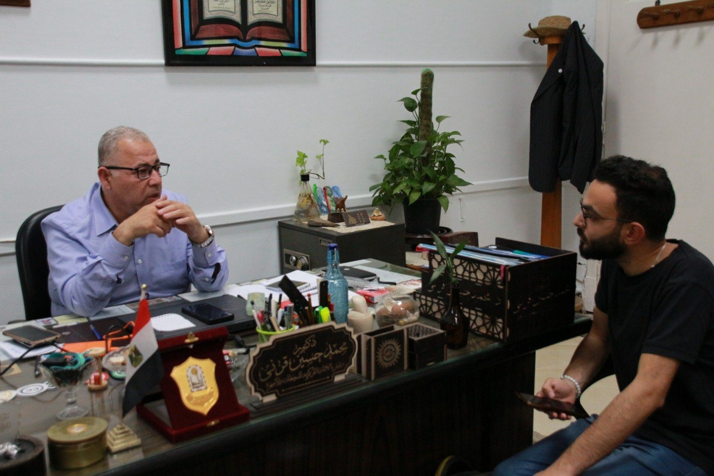
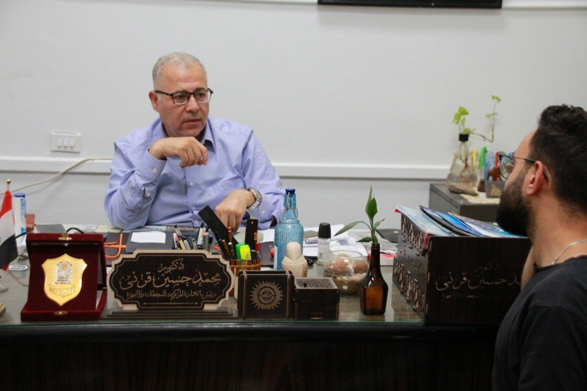
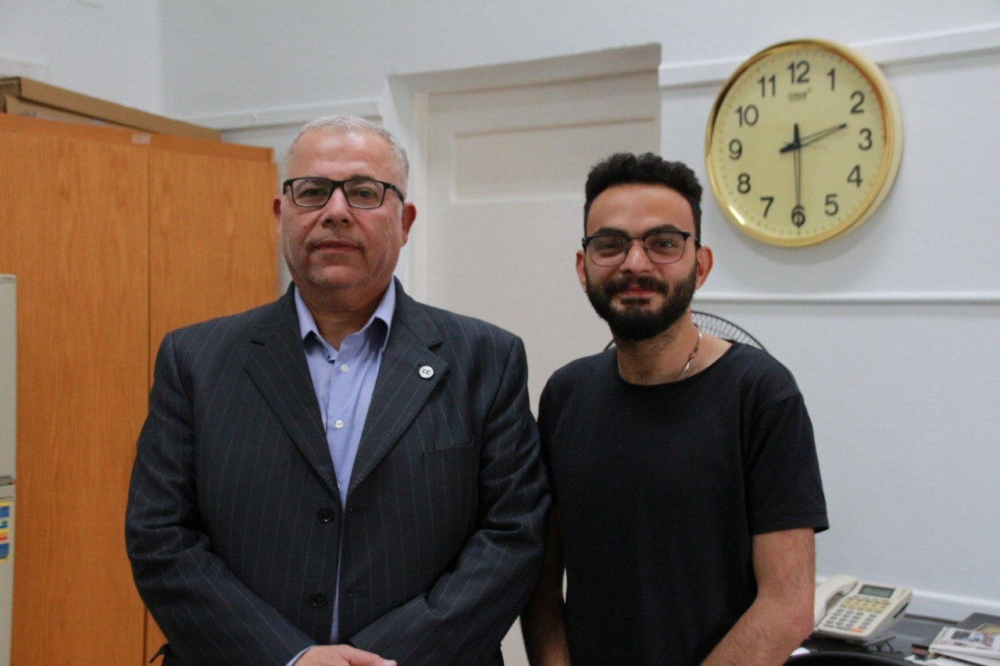

حسين قرني: مصر شهدت تغيرات مناخية لم تشهدها من قبل
- يشهد كوكب الأرض ظاهرة مقلقة تعرف باسم التغير المناخي وتتمثل في التغيرات الطويلة المدى في درجات الحرارة وأنماط الطقس على مستوى الكوكب بأكمله وتعد هذه الظاهرة من أهم التحديات البيئية التي تواجهها البشرية اليوم ولها تأثيرات سلبية واسعة النطاق على النظم البيئية وصحة الإنسان هل يوجد حل لها وما هي السياسات والبدادرات التي تقوم بها الدولة للحد من هذه المشكلة كل هذا سيجاوب عليه دكتور محمد حسين قرني رئيس الادارة المركزية للاجهزة والارصاد بهيئة الارصاد الجوية وحاصل الدكتوراة في جامعة بورسعيد في الارصاد الجوية والبيئة.
- الذي صرح أن التغير المناخي هو قياس عناصر التقس في مكان محدد مثل الحرارة والرطوبة ورياح وكمية الامطار علي مدار فترة زمنية طويلة لا تقل عن 30 سنة وكل ما كانت الموعلومات تقاس بشكل منتظم وعلي فترات زمنية قصيرة ومتكررة أصبحت مقلومة المناخ في هذه المنطقي هي معلومة صحيحة ودقيقة فأذا حدث خلل في هذه القياسات علي مدار الوقت أصبح هناك تغير مناخي في المنطقة.
- أشار الدكتور بعدد من الامثلة التي توكد حدوث تغير في المناخ مثل تغير مواعيد الفصول وشددتها أو تغير في سمات فصل نفسه وظهور ظواهر جوية جديدة مثل الامطار الشديدة التي حدثت في أسوان التي هي في الاساس منطقة غير ممطرة علي مدار أكثر 15 سنة.
- أكد حسين ان هناك أسياب كثيرة ادت الي تغير المناخ منها أسباب طبيعية وأسباب بشرية وقذ ذكر أن الاسباب الطبيعية هي حدوث الدورات المناخية بمعني أنه مع مرور الوقت يحدث خلل في توزيعات الضغط علي سطح الكورة الارضية يؤدي الي تحرك في ما يعرف (بأحزمة الامطار) يؤدي الي تغير في أماكن نزول الامطار مثل ما حدث في جنوب مصر في أسوان او مثل ما حدث في الامارات وحالات الامطار الشديدة التي تحدث في الخليج العربي.
- أما عن الاسباب البشرية فحدث ولا حرج حرق وأزالة الغابات ودخان المصانع التي هي في الاساس سبب أرتفاع درجات الحرارة والاحتباس الحراري الذي أدي الي ذوبان الجليد وأرتفاع مستوي المياة علي سطح الكورة الارضية غير وجود أسباب خري أدت الي تغير المناخ مثل أستخدام الطاقة الغير متجددة أو الغير نظيفة مثل حرق الوقود الأحفوري أستخدام الفحم وغيرها من مصادر الطاقة الملوثة للبيئة.
- اوضح ايضا أن أتغير المناخ أثر علي البيئة في أبعد مختلفة مثل رفع من مستوي المياه الذي ادي الي أرتفاع ملوحة الطربة في منطة الدلتا في شمال مصر وكان لابد للحكومة المصرية أن تعمل علي مشروعات لتأمين السواحل الشمالية ضد نحر البحر كما ادي تغير المناخ والاحتباس الحراري وأرتفاع درجات الحرارة الي كثرة الموجات الحرارية في مصر وتغير درجات الحرارة في الفصول المختلفة بشكل جزري غير أرتفاع من نسب وقوع العواصف الطرابية والعواصف الممطرة مثل عاصفة التنين في ربيع 2019 في مصر كل هذة التغيرات الجزية بسبب التغير المناخي وتأثيره علي البيئة.
- شدد حسين أن علي كل المزارعيين في ظل التغيرات المناخية علي متابعة الاحوال الجوية والتقس الان الزراعة من اكبر واهم الجالات المتؤثرة بالتغير المناخي حيث أن بسبب تغير الفصول وأرتفاع وأنخفاض درجات الحرارة بشكل غير طبيعي غير من شكل الزراعة و المحاصيل علي مدار سنة غير وقوع العواصف النختلفة مثل الطرابية أو الممطرة التي هي أيضا أثرت بشكل كبير علي الزراعة في مصر حيث أن هناك اراضي زراعية تمتد من الاسكندرية حتي السلوم تعتمد بشكل أساسي علي مياه الامطار بسبب التغير المناخي.
- شرح الدكتور أن التغير المناخي وتأثيره علي البيئة لم يقف فوق الارض فقط حيث أن تيارات الهواء ومع تغير المناخ وأرتفاع درجات الحرارة بشكل مستمر أثر علي نمو الشعب المرجانية في البحر ما أدي الي التأثير علي الحياة البحرية وتنوعها بشكل عام مثل السلاحف البحرية التي تهدد بالانقراد بسبب أرتفاع درجات الحرارة الذي يؤدي إلى زيادة عدد الإناث وانخفاض الذكور.
- شدد الدكتور حسين أن تأثير تغير المناخي خطير جدا حيث أنه يهدد التنوع البيولوجي بسبب وجود أكثر من فصيلة مهدد بالاتقراد بسبب أرتفاع درجات الحرارة مثل الدب القطبي الذي يعتمد على الجليد البحري للصيد والتنقل ومع ذوبان الجليد البحري بسبب تغيرات المناخ تُجبر الدببة القطبية على السباحة لمسافات أطول للوصول إلى طعامها مما يؤدي إلى موتها من الجوع والإرهاق غيرها من الحيوانات مثل الفيل الآسيوي وغيرها.
- أوضح قرتي أيضا أن التغير المناخي ليس لة أثار سلبية فقط بل هناك أثار أجابية أهمها زيادة سرعة الرياح في بعض المناطق من ما جعلها مكان ممتاز لتوليد طاقة الرياح حيث أن قامت الدولة بعمل مزارع لتوليد الطاقة في هذه المناطق التي هي في الاساس طاقة منجددة ونظيفة ستولد طاقة بشكل مستمر وغير ضار بالبيئة.
- كما أشاد بدور المنظمات العالمية التي تنادي بستخدام الوقود الطبيعي والطاقة النظيفة والمبادرات والمؤطمرات الدولية التي تعقدها الدول الان مثل كوب 27 وكوب 28 بالضافة الي ان صوت المنظمات الغير حكومية أصبح مسموع أكثر من الحكومات مثل منظمة السلام الأخضر وغيرها من المنظمات التي تنادي بالحفاظ علي مصادر المياة النظيفة وتقليل أستخدام الوقود الاحفوري مثل البترول والمازوت وعمل فلاتر لتقليل أمبعثات المصانع وتركيب مصارف لصرف مخلافات المصانع بعيد عن الانهار والبحار أو أستخدام تلك المخلفات في صناعات اخري واعادة تدورها بشكل لا يضر البيئة وعمل حمالات توعية للناس بأهمية الحفاظ علي البيئة من التلوث.
- ركز الدكتورعلي جهود الدولة المصرية لمكافحة التلوث البيئي والتغير المناخي حيث صرح أن مصر وقعت علي أكثر من أتفاقية الخاصة بالتلوث وحماية البيئة وطبقة الاوزون ومن أهم تلك الاتفاقيات أتفاقية الحد من غازات (الكلورو فلورو كاربون) او الغازات المستخدمة في التبريد حيث انه لا يمكن لاي شخص أستيراد تلك الغازات قبل أن يخضع لموافقة جهاز شؤن البيئة وأستيراد كمية محدد وعمل تفتيشات المستمرة علي الكمية المستوردة كل هذا بسبب توقيع مصر للاتفاقية الدولية لحماية البيئة.
- لم تتوقف جهود الدولة عند الاتفاقيات حيث انه صرح بوجود شبكة من محطات الرصد البيئي موزعة علي جمهرية مصر بأكملها مهمتها قياس غازات الاحتباس الحراري والاتربة العالقة التي توثر علي صحة الانسان والتي هي بدورها بتصدر تقرير سنوي بتركيز تلك الملوثات لضمان وجود مصر ضمن المعادلات العالمية وغير العمل علي نقل مصانع الاسمنت خارج الكتل العمرانية في حلوان وجنوب القاهرة لتقليل تلوث الهواء وتايره السلبي علي صحة الانسان.
- ختم الدكتور كلامه أنه علي الدولة الاهتمام بالبحث العلمي لمواكبة التتطور الحالي في مجال شؤن المناخ وعلي كل أنسان ادراك أن التغير الحقيقي ياتي من الداخل لان المسولية لا تقع على عاتق الحكومات والمنظمات الدولية فقط بل تقع أيضا على عاتق كل فرد من أفراد المجتمع فكل سلوك إيجابي يساهم في إحداث فرق حتي لو كان هذا الفارق هو فارق شخص واحد.